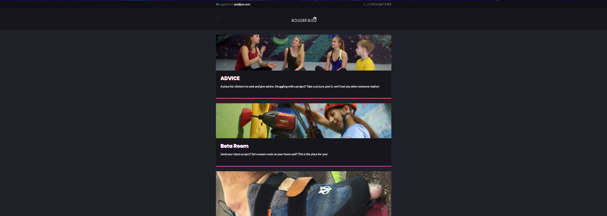
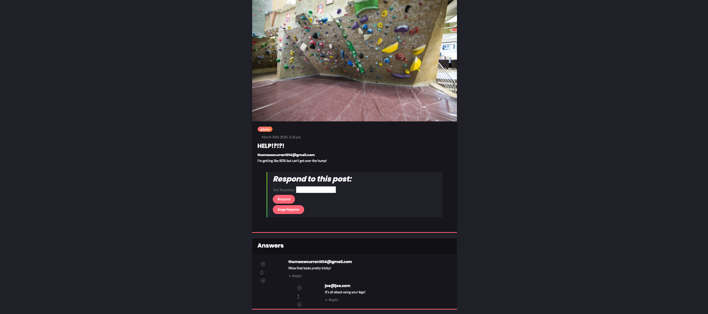
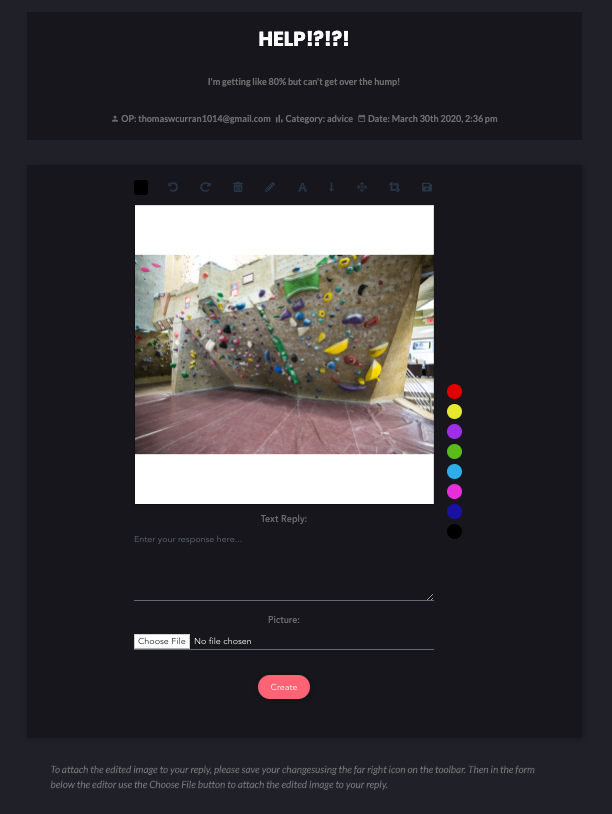

What is Boulder Budz?
A forum app for climbers
I'm passionate about getting outside and living an active lifestyle and I wanted my capstone to reflect that. While brainstorming I boiled my core ideas down to running and climbing. I've used apps for running in the past, but never for climbing. So I decided to create an app that gave users a place to review and discuss gear, trade and sell gear, and ask for advice on challenges they are facing in their climbing.
My Stack:
- Ruby on Rails Backend
- Vue.js Frontend
- PostgreSQL
- AWS S3
- Twilio
- SASS
- Bootstrap
- HTML

Question Show Page
Response Options, Voting, and Nested Response Tree
Each user question has it's own show page with a number of features. Users can respond to the question with a text response or an image response (more on that below). A user will recieve a text notification when another user replies to their question or response. The nested response tree is achieved in three steps:
- Polymorphic Association on the Answer model
- Recursive methods in my Question and Answer views on the backend
- Recursive Vue component to access the "Russian Nesting Doll" of answers created by the previous two steps
Each response has a vote counter, this system was based on boolean values and votes are scoped to each user having a single vote on any response on the app.

Image Editor
Leveraging a third party library (vue-image-markup by Lionix Team) I created a page where users can markup the original image associated with a question, and then submit their marked up version as a response. This allows users to give visual instructions in situations where text responses aren't really enough. The library included two custom components for the editing tools and color picker. One of the major challenges was pulling images into the canvas element from S3, but nothing a few pots of coffee and a scream-pillow couldn't help me solve!